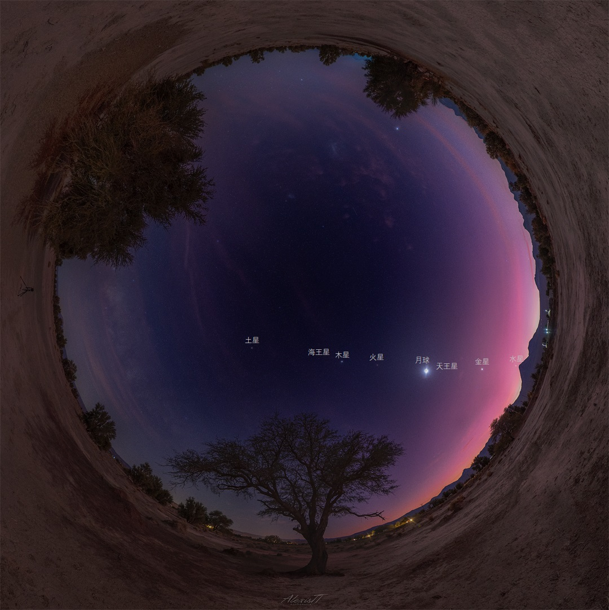

The Solar System in a Table
Time stamp: 2026-07-04
Here is a quick reference table for the eight planets in our solar system. The values are rounded for simplicity.

| Planet | Diameter (km) | Distance from Sun (million km) | Moons | Day Length | Year Length | Atmosphere | Notable Feature |
|---|---|---|---|---|---|---|---|
| Mercury | 4,880 | 58 | 0 | 59 Earth days | 88 Earth days | Extremely thin | Smallest planet; fastest orbit |
| Venus | 12,104 | 108 | 0 | 243 Earth days | 225 Earth days | Thick CO₂ | Hottest planet; spins backwards |
| Earth | 12,742 | 150 | 1 | 24 hours | 365.25 days | Nitrogen & Oxygen | Only known planet with life |
| Mars | 6,779 | 228 | 2 | 24.6 hours | 687 Earth days | Thin CO₂ | Largest volcano: Olympus Mons |
| Jupiter | 139,820 | 778 | 95+ | 9.9 hours | 11.9 Earth years | Hydrogen & Helium | Great Red Spot; largest planet |
| Saturn | 116,460 | 1,434 | 146+ | 10.7 hours | 29.5 Earth years | Hydrogen & Helium | Prominent ring system |
| Uranus | 50,724 | 2,873 | 27 | 17.2 hours | 84 Earth years | Hydrogen, Helium, Methane | Rotates on its side |
| Neptune | 49,244 | 4,495 | 14 | 16.1 hours | 165 Earth years | Hydrogen, Helium, Methane | Strongest winds in the solar system |
A few takeaways: the inner planets (Mercury, Venus, Earth, Mars) are small, rocky, and close to the Sun. The outer planets (Jupiter, Saturn, Uranus, Neptune) are giant worlds made mostly of gas or ice, with many moons and ring systems. Even with rounded numbers, the size gap between Earth and Jupiter is astonishing.